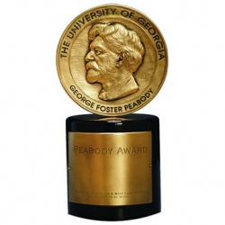

Premios
Los Soprano gano y fue nominado a varios premios durante el tiempo que estuvo en emision.
La serie fue nominada al Primetime Emmy a la mejor serie dramatica en todos los anos en los que fue elegible. Tras ser nominada y perder el premio en 1999, 2000, 2001 y 2003 (la primera vez perdio ante The Practice, y las tres siguientes ocasiones el galardon se lo llevo The West Wing),
Los Soprano se hicieron con el premio en 2004 y 2007. Su premio de 2004 significo la primera serie de television por cable que ganaba un premio, mientras que en 2007 fue la primera serie que gano el premio, tras Upstairs, Downstairs en 1977, despues de que la serie haya finalizado. En total recibio 21 nominaciones de los premios Primetime Emmy al mejor guion en una serie dramatica, de los cuales gano en seis ocasiones y David Chase, el creador, recibio tres premios.
La serie gano, al menos, un premio por actuacion en cada ano que fue posible su nominacion, excepto en 2006 y 2007.
James Gandolfini y Edie Falco fueron nominados seis veces cada uno al mejor actor y mejor actriz en una en un serie dramatica, respectivamente, ganando un total de tres premios. Joe Pantoliano gano un premio al mejor actor de reparto en 2003, mientras que Michael Imperioli y Drea de Matteo hicieron lo propio en 2004 en la misma categoria. Otros actores que recibieron nominaciones a los Emmy fueron Lorraine Bracco (en las categorias de mejor actriz y mejor actriz de reparto), Dominic Chianese, Nancy Marchand, Aida Turturro, Steve Buscemi (quien fue nominado a la mejor direccion por "Pine Barrens"), Tim Daly, John Heard y Annabella Sciorra.
George Foster Peabody Award
En 2000 y 2001, Los Soprano ganaron dos premios George Foster Peabody consecutivos. Solo dos series lo habian hecho anteriormente: Doctor en Alaska y The West Wing. La serie recibio, tambien, varias nominaciones a los premios Globo de Oro (gano el galardon de mejor serie dramatica en 2000) y los principales premios de los sindicatos (directores, productores, guionistas y actores).